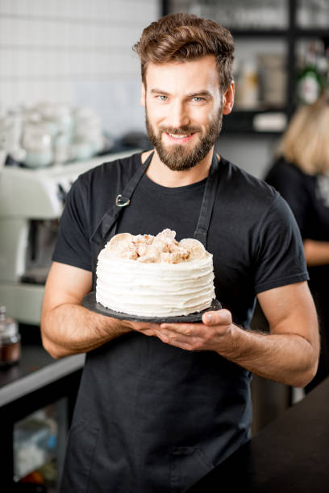

Welcome to Christie and Chris's Cooking Cabin
Founded in 2010 by culinary enthusiasts and life partners, Christie and Chris, our Cooking Cabin has grown from a humble kitchen space into a vibrant community hub for cooking lovers. Inspired by a shared passion for making cooking accessible and enjoyable for everyone, Christie and Chris launched their first DIY Cooking Kit from their home kitchen, marking the beginning of an exciting journey.
Our Growth
Over the years, Christie and Chris's Cooking Cabin has expanded its offerings to include an array of cooking equipment, recipe books, and specialty ingredients. We've also introduced a line of branded merchandise, allowing our community to take a piece of the Cooking Cabin experience home with them.
Expanding Our Services
Recognizing the joy and bonding cooking brings, we ventured beyond products to launch cooking classes in 2012. This soon evolved into a full suite of services, including team building events, private cooking parties, cooking workshops, culinary tours, and masterclasses, each designed to enrich the culinary skills and experiences of our participants.
Today and Beyond
Today, Christie and Chris's Cooking Cabin is more than just a company; it's a community where individuals come to learn, share, and celebrate the art of cooking. As we look to the future, we remain committed to innovating and expanding our offerings, always staying true to our mission of making cooking fun and accessible for all. Click here for a video of one of our cooking classes!
Management Team
| Christie - Co-Founder and Culinary Director Christie's passion for cooking and teaching has been the cornerstone of our Cabin's philosophy. With a background in culinary arts and nutrition, she designs our cooking kits and leads many of our classes. |
|
 |
Chris - Co-Founder and Operations Manager Chris handles the operational side of the Cabin, ensuring everything runs smoothly. His expertise in business management and love for technology have propelled our online and in-store experiences to new heights. |
|  | Jeffery - Assistant Chef With a zest for innovation and a knack for flavors, Jeffery supports the kitchen with his culinary skills and assists in developing new recipes for our DIY cooking kits. His dedication and creativity make him an invaluable member of our team, always ensuring that every dish not only tastes good but also inspires our community to explore their cooking potential. |